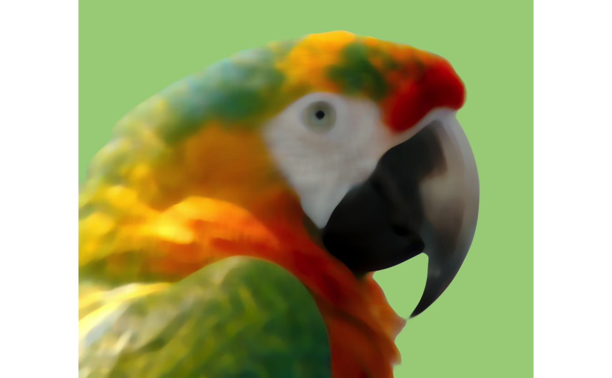
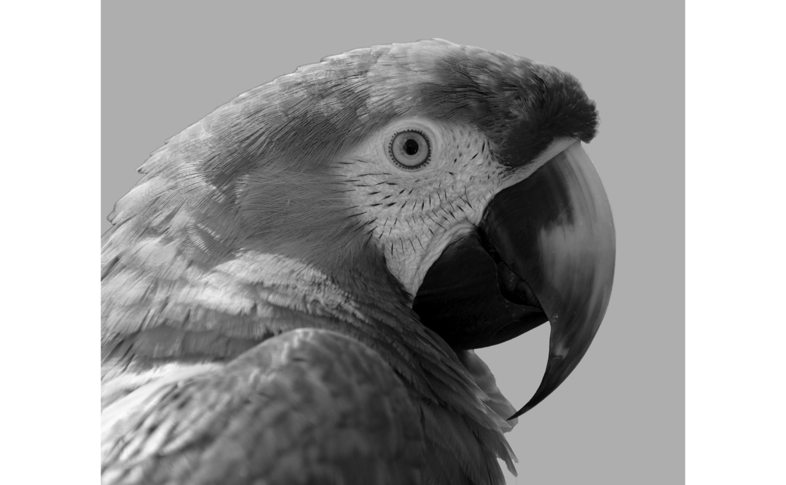
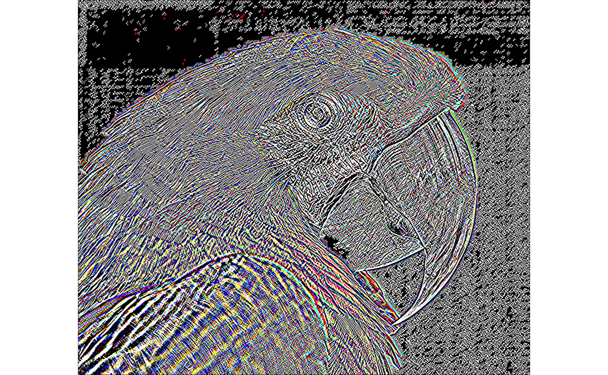
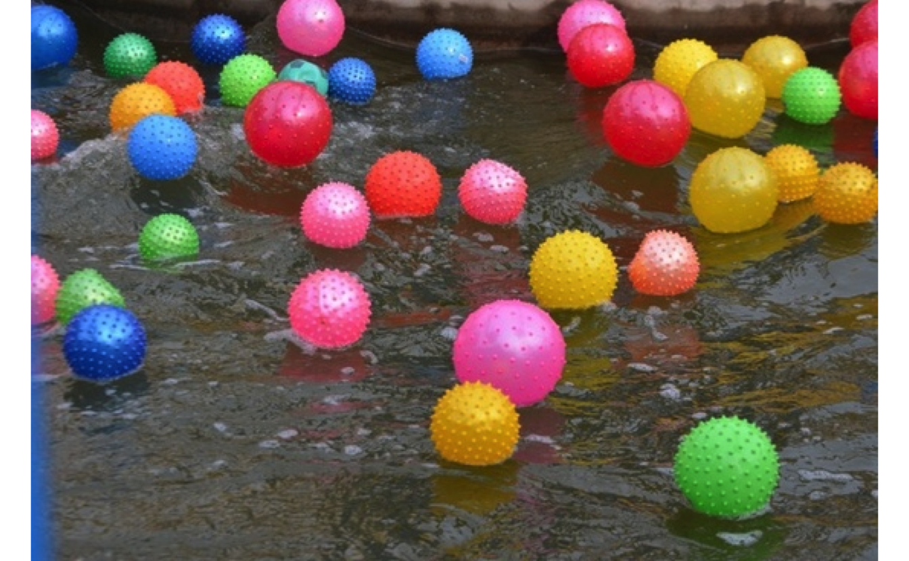
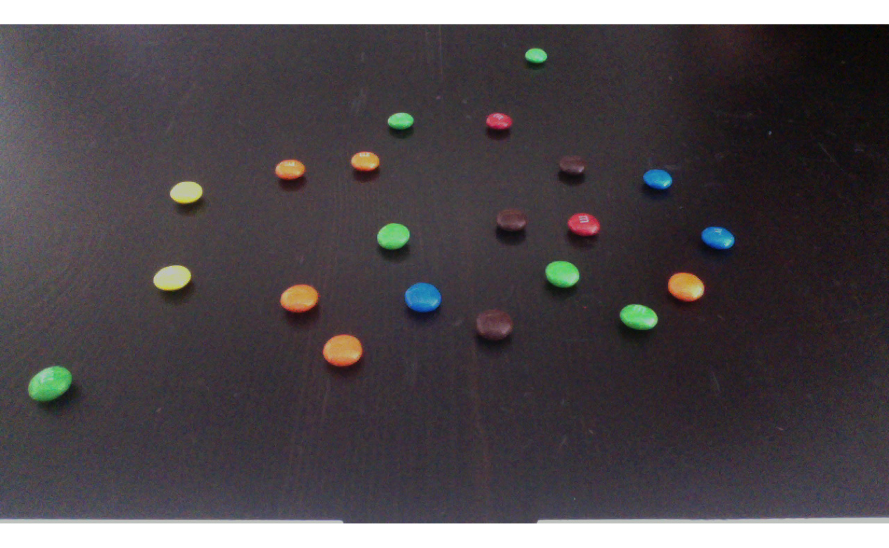
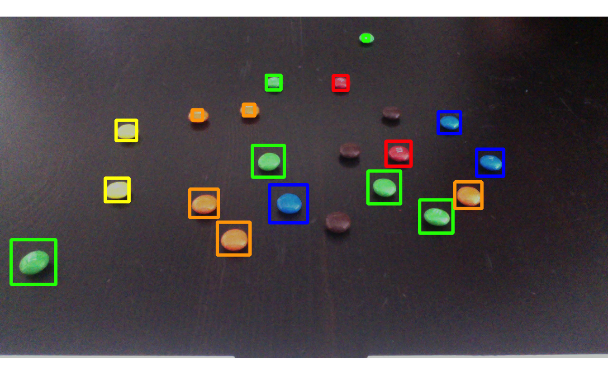

This code has been lightly revised to make sure it works as of 2018-12-16.
Overview
Recently I stumbled across the Rvision package, which frankly looks amazing so far (still in development at this time of writing). So I decided to take it for a spin and show you what I found.
Setup
So for this, you will need a computer with a webcam and the Rvision package with its dependencies. It will use ROpenCVLite to access OpenCV’s functionalities. If not already installed, ROpenCVLite will be installed first by the command line below. Furthermore while not necessary for Rvision I have imported dplyr for general data manipulation.
#devtools::install_github("swarm-lab/Rvision")
library(Rvision)
library(dplyr)Minimal Setup - working with a photo
We will start by simply loading a picture of a parrot. This is done using the function image, which creates an object of class Image. Image objects are pointers toward C++ objects stored in memory and will therefore not work with some functions in base R such sum, %%, etc.
img <- image("parrot.jpg")If we want to see the image we loaded we simply plot it:
plot(img)For more information about the Image object we can turn to the property functions:
dim(img)
## [1] 1595 1919 3
nrow(img)
## [1] 1595
ncol(img)
## [1] 1919
nchan(img)
## [1] 3
bitdepth(img)
## [1] "8U"
colorspace(img)
## [1] "BGR"Blurs
Now that we have an Image object we can use some of tools at our disposal, which includes standard things like blurs:
boxFilter(img, k_height = 25, k_width = 25) %>% plot()gaussianBlur(img, k_height = 25, k_width = 25, sigma_x = 5, sigma_y = 5) %>% plot()medianBlur(img, k_size = 25) %>% plot()
sqrBoxFilter(img, k_height = 25, k_width = 25) %>% plot()Operators
Other kinds of operations can be done, such as changing the color space:
changeColorSpace(img, "GRAY") %>% plot()
And apply edge detection algorithms such as sobel and laplacian.
sobel(img) %>% plot()
Draws
The package also includes a number of drawing functions starting with the prefix draw, ending with Arrow, Circle, Ellipse, Line, Rectangle and text. These functions, unlike the others, modify the Image object that is taken in, instead of returning another Image object.
img1 <- cloneImage(img)
drawCircle(img1, x = 750, y = 750, radius = 200, color = "blue",
thickness = 10)
plot(img1)Blob detection
By now we looked at a bunch of different functions but all of them have been used separately. Now let’s combine them to detect something inside the picture.
img <- image("balls.jpg")
plot(img)
For our further calculations, we need to know what color space this image is in
colorspace(img)
## [1] "BGR"Which is different than the correctly commonly used RGB. In the following code, I tried to find all the blue balls. For that, I used the split function to split the Image object into 3, one for each color channel. Then I used a do.call to return an object where the blue channel is more the 200, and the red and green are less than 200, in the hope that it would be enough to identify the blue color without also finding bright areas. This being a logical expression gives us an image file that is white when true and black when it isn’t. Lastly, we used the medianBlur to remove any rough edges and flicker. (you can try comment out the medianBlur and see what changes)
img %>%
split() %>%
do.call(function(B, G, R) B > 200 & G < 200 & R < 200, .) %>%
medianBlur() %>%
plot()If we would like to highlight these balls on the original image we have to detect where these white blobs are and use the draw functions to draw on our original image. We use simpleBlobDetector and play around with the settings till we get something reasonable.
blue_balls <- img %>%
split() %>%
do.call(function(B, G, R) B > 200 & G < 200 & R < 200, .) %>%
medianBlur() %>%
simpleBlobDetector(max_area = Inf, min_area = 10, blob_color = 255,
filter_by_convexity = FALSE,
filter_by_inertia = FALSE, min_threshold = 0)
blue_ballsWe use the cloneImage as it creates a new Image object such that the drawing doesn’t change the original Image object.
img1 <- cloneImage(img)
for (i in seq_len(nrow(blue_balls))) {
drawRectangle(image = img1,
pt1_x = blue_balls$x[i] - 1 + blue_balls$size[i] / 2,
pt1_y = blue_balls$y[i] - 1 + blue_balls$size[i] / 2,
pt2_x = blue_balls$x[i] - 1 - blue_balls$size[i] / 2,
pt2_y = blue_balls$y[i] - 1 - blue_balls$size[i] / 2,
thickness = 3, color = "blue")
}
plot(img)We see that it worked fairly well, it didn’t go all the way till the edges of the balls and it appeared to catch the blue artifact on the lower left side, but more careful ranges could take care of that problem.
Streams
Rvision also has a Stream object that we can utilize. the stream function creates a Stream object from the camera connected to your computer. In my case, number 0 is the webcam in my Macbook. Its corresponding function is release which closes the stream object. To capture something we use the handy readNext function that reads the next frame and returns an Image object.
my_stream <- stream(0) # 0 will start your default webcam in general.
my_img <- readNext(my_stream)
release(my_stream)Let us take a look at the image that was captured on my webcam.
plot(my_img)
and what a coincidence!! Its a handful of distinctly colored m&m’s against a dark background. Lets try against to locate the different colors, but before we do that let us reuse what we did earlier and make it into some custom functions:
blob_fun <- function(img, fun, color = character()) {
img %>%
split() %>%
do.call(fun, .) %>%
medianBlur(15) %>%
simpleBlobDetector(max_area = Inf, min_area = 10, blob_color = 255,
filter_by_convexity = FALSE,
filter_by_inertia = FALSE, min_threshold = 0) %>%
mutate(color = color)
}
multi_draw <- function(img, blobs) {
if (nrow(blobs) > 0) {
for (i in 1:nrow(blobs)) {
drawRectangle(img,
blobs$x[i] - 1 + blobs$size[i],
blobs$y[i] - 1 + blobs$size[i],
blobs$x[i] - 1 - blobs$size[i],
blobs$y[i] - 1 - blobs$size[i],
thickness = 5, color = blobs$color[1])
}
}
}Like before we found the blue balls by identifying the region in the BGR color space where it is blue, we expand the same idea to the other colors. (I have not attempted brown as it is fairly similar in color to the table)
blue <- function(B, G, R) B > 150 & R < 200 & G < 200
red <- function(B, G, R) R > 150 & B < 200 & G < 150
green <- function(B, G, R) G > 150 & B < 200 & R < 200
yellow <- function(B, G, R) G > 150 & B < 200 & B > 150 & R > 150
orange <- function(B, G, R) G > 150 & B < 150 & R > 150Now we just have to run our custom blob detection function and custom drawing function for each color and see the final result
blue_mms <- blob_fun(my_img, blue, "blue")
red_mms <- blob_fun(my_img, red, "red")
green_mms <- blob_fun(my_img, green, "green")
yellow_mms <- blob_fun(my_img, yellow, "yellow")
orange_mms <- blob_fun(my_img, orange, "orange")
multi_draw(my_img, blue_mms)
multi_draw(my_img, red_mms)
multi_draw(my_img, green_mms)
multi_draw(my_img, yellow_mms)
multi_draw(my_img, orange_mms)
plot(my_img)
And it is wonderful!
Displays
The last trip of the tour is a look at the Displays that Rvision facilitates. And in its simplest form, it creates a window where Image objects can be displayed. This means that we are able to do live m&m’s detection!!
In a minimal setup, you would have this following chunk of code, which sets up a stream, a display, and then populates that display with new images taken from the camera till you stop it. And then termination functions for the stream and display. However, this is no different than a video feed.
my_stream <- stream(0)
newDisplay("Live test", 360, 640)
while(TRUE) {
img <- readNext(my_stream)
display(img, "Live test", 25, 360, 640)
}
destroyDisplay("Live test")
release(my_stream)So instead we will use the functions from earlier to detect and highlight the colored m&m’s!
my_stream <- stream(0)
newDisplay("Live test", 360, 640)
while(TRUE) {
img <- readNext(my_stream)
blue_mms <- blob_fun(img, blue, "blue")
red_mms <- blob_fun(img, red, "red")
green_mms <- blob_fun(img, green, "green")
yellow_mms <- blob_fun(img, yellow, "yellow")
orange_mms <- blob_fun(img, orange, "orange")
multi_draw(img, blue_mms)
multi_draw(img, red_mms)
multi_draw(img, green_mms)
multi_draw(img, yellow_mms)
multi_draw(img, orange_mms)
display(img, "Live test", 25, 360, 640)
}
destroyDisplay("Live test")
release(my_stream)
It’s a little choppy but that might be because of my now quite old Macbook.
Conclusion
I had a blast working with Rvision and I look forward to using it in future projects! I would also recommend against using eatable data points as they tend to disappear over time.
session information
─ Session info ───────────────────────────────────────────────────────────────
setting value
version R version 4.0.5 (2021-03-31)
os macOS Big Sur 10.16
system x86_64, darwin17.0
ui X11
language (EN)
collate en_US.UTF-8
ctype en_US.UTF-8
tz Pacific/Honolulu
date 2021-07-05
─ Packages ───────────────────────────────────────────────────────────────────
package * version date lib source
assertthat 0.2.1 2019-03-21 [1] CRAN (R 4.0.0)
blogdown 1.3 2021-04-14 [1] CRAN (R 4.0.2)
bookdown 0.22 2021-04-22 [1] CRAN (R 4.0.2)
bslib 0.2.5.1 2021-05-18 [1] CRAN (R 4.0.2)
cli 3.0.0 2021-06-30 [1] CRAN (R 4.0.2)
clipr 0.7.1 2020-10-08 [1] CRAN (R 4.0.2)
codetools 0.2-18 2020-11-04 [1] CRAN (R 4.0.5)
crayon 1.4.1 2021-02-08 [1] CRAN (R 4.0.2)
DBI 1.1.1 2021-01-15 [1] CRAN (R 4.0.2)
desc 1.3.0 2021-03-05 [1] CRAN (R 4.0.2)
details * 0.2.1 2020-01-12 [1] CRAN (R 4.0.0)
digest 0.6.27 2020-10-24 [1] CRAN (R 4.0.2)
dplyr * 1.0.7 2021-06-18 [1] CRAN (R 4.0.2)
ellipsis 0.3.2 2021-04-29 [1] CRAN (R 4.0.2)
evaluate 0.14 2019-05-28 [1] CRAN (R 4.0.0)
fansi 0.5.0 2021-05-25 [1] CRAN (R 4.0.2)
generics 0.1.0 2020-10-31 [1] CRAN (R 4.0.2)
glue 1.4.2 2020-08-27 [1] CRAN (R 4.0.2)
highr 0.9 2021-04-16 [1] CRAN (R 4.0.2)
htmltools 0.5.1.1 2021-01-22 [1] CRAN (R 4.0.2)
httr 1.4.2 2020-07-20 [1] CRAN (R 4.0.2)
jquerylib 0.1.4 2021-04-26 [1] CRAN (R 4.0.2)
jsonlite 1.7.2 2020-12-09 [1] CRAN (R 4.0.2)
knitr * 1.33 2021-04-24 [1] CRAN (R 4.0.2)
lifecycle 1.0.0 2021-02-15 [1] CRAN (R 4.0.2)
magrittr 2.0.1 2020-11-17 [1] CRAN (R 4.0.2)
pbapply 1.4-3 2020-08-18 [1] CRAN (R 4.0.2)
pillar 1.6.1 2021-05-16 [1] CRAN (R 4.0.2)
pkgconfig 2.0.3 2019-09-22 [1] CRAN (R 4.0.0)
png 0.1-7 2013-12-03 [1] CRAN (R 4.0.0)
purrr 0.3.4 2020-04-17 [1] CRAN (R 4.0.0)
R6 2.5.0 2020-10-28 [1] CRAN (R 4.0.2)
Rcpp 1.0.6 2021-01-15 [1] CRAN (R 4.0.2)
rlang 0.4.11 2021-04-30 [1] CRAN (R 4.0.2)
rmarkdown 2.9 2021-06-15 [1] CRAN (R 4.0.2)
ROpenCVLite 4.52.0 2021-07-05 [1] CRAN (R 4.0.5)
rprojroot 2.0.2 2020-11-15 [1] CRAN (R 4.0.2)
Rvision * 0.6.0 2021-07-05 [1] Github (swarm-lab/Rvision@0377e45)
sass 0.4.0 2021-05-12 [1] CRAN (R 4.0.2)
sessioninfo 1.1.1 2018-11-05 [1] CRAN (R 4.0.0)
stringi 1.6.2 2021-05-17 [1] CRAN (R 4.0.2)
stringr 1.4.0 2019-02-10 [1] CRAN (R 4.0.0)
tibble 3.1.2 2021-05-16 [1] CRAN (R 4.0.2)
tidyselect 1.1.1 2021-04-30 [1] CRAN (R 4.0.2)
utf8 1.2.1 2021-03-12 [1] CRAN (R 4.0.2)
vctrs 0.3.8 2021-04-29 [1] CRAN (R 4.0.2)
withr 2.4.2 2021-04-18 [1] CRAN (R 4.0.2)
xfun 0.24 2021-06-15 [1] CRAN (R 4.0.2)
xml2 1.3.2 2020-04-23 [1] CRAN (R 4.0.0)
yaml 2.2.1 2020-02-01 [1] CRAN (R 4.0.0)
[1] /Library/Frameworks/R.framework/Versions/4.0/Resources/library